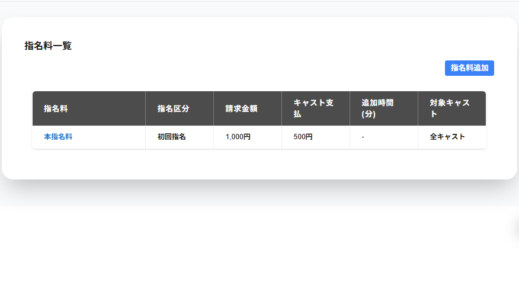

指名料一覧には予約方法が表示されています。
指名区分の列には登録した指名区分が表示されます。
請求金額の列には登録した指名区分が表示されます。
キャスト支払の列には登録したキャスト支払が表示されます。
追加時間(分)の列には登録した追加時間(分)が表示されます。
特定キャストの列には、登録した適用できるキャストが表示されます。
対象キャストが0名の場合は対象キャストがいませんと表示されます。
対象キャストが2名以下の場合は対象のキャスト名が表示されます。
対象キャストが3名以上の場合は対象のキャストの人数で表示されます。
全キャストが対象の場合は全キャストと表示されます。
